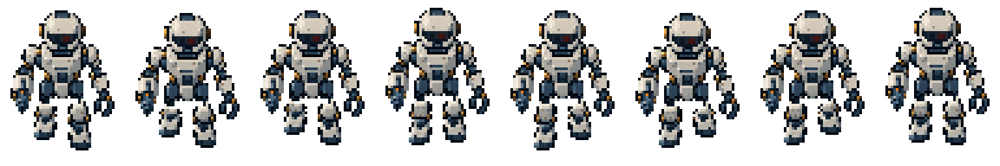

v003 候选 · 等待 TA 审核。八帧已采用实体二值 Alpha；造型、步态与原生轮廓仍待美术验收。
同一套头胸、枪、夹爪和腿部纹理驱动八相位。左/右均指角色自身；绿色点为支撑足、橙点为摆动足，青点为该足的地面投影，白十字为固定 root。标记是已登记关节，不是自动 bbox 对齐。
8 FPS 正常播放
1 FPS 慢速
固定区域全帧 4× 联系图（每格使用同一裁切区域，仅用于观察细节）：
